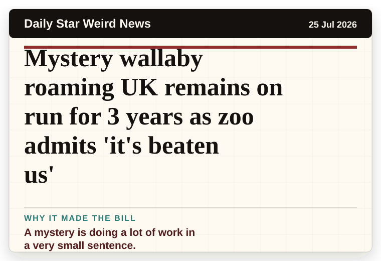
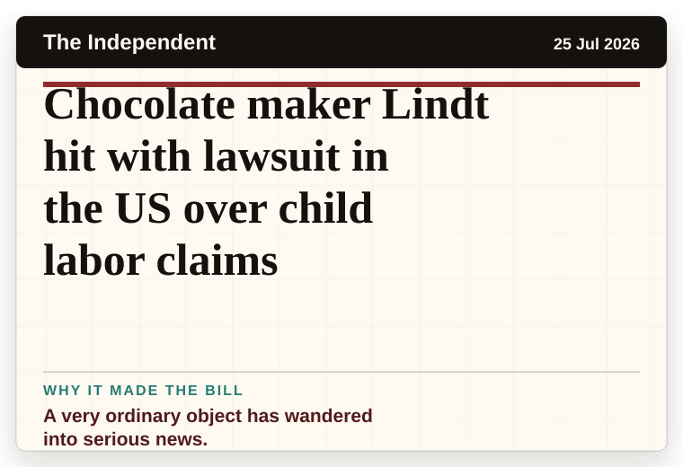
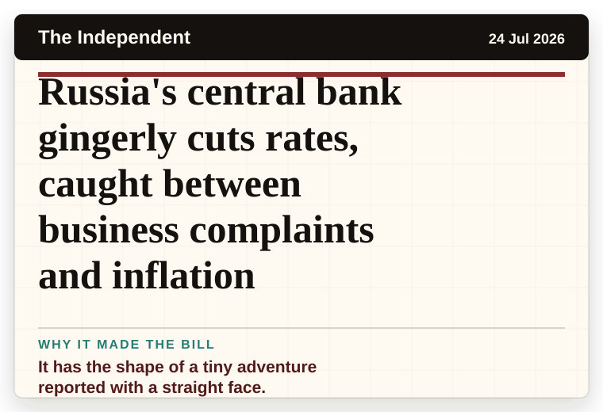
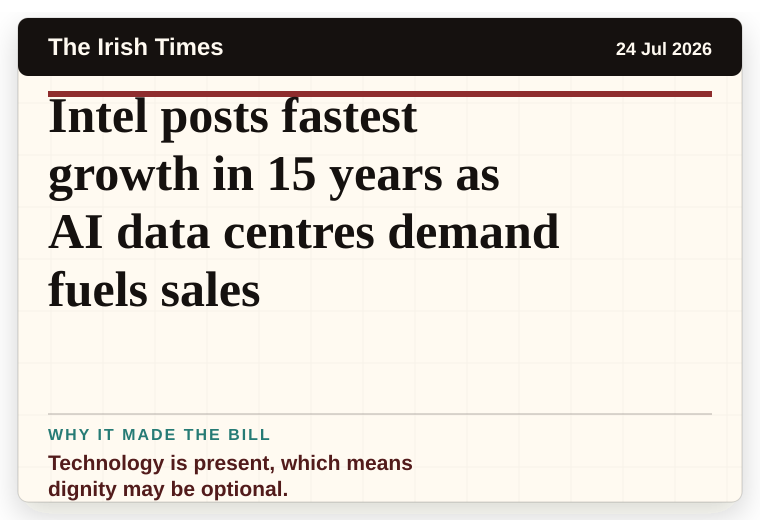

NT News
Australia
Mystery buyer’s $34m plan to reshape North Qld cattle country
A mystery is doing a lot of work in a very small sentence.
The latest daily picks, linked back to the original sources. Search the room, pick a source, or follow a headline out to the full story.
Record updated: 25 Jul 2026, 07:53 AM AEST
Showing 16 headline candidates from the refresh run completed on 25 Jul 2026, 07:53 AM AEST.
A mystery is doing a lot of work in a very small sentence.

The word chaos gives it open-mic energy.

The scale is doing deadpan comedy.

It has the shape of a tiny adventure reported with a straight face.

The headline is already trying not to laugh.

A household object has somehow reached the news desk.

A mystery is doing a lot of work in a very small sentence.

The headline is already trying not to laugh.

A mystery is doing a lot of work in a very small sentence.

It has the shape of a tiny adventure reported with a straight face.

It has the shape of a tiny adventure reported with a straight face.

A wonderfully specific detail has taken centre stage.

A wonderfully specific detail has taken centre stage.

A very ordinary object has wandered into serious news.

It has the shape of a tiny adventure reported with a straight face.

Technology is present, which means dignity may be optional.